Chapter 12 - Factors with {forcats}
Vebash Naidoo
06/11/2020
Last updated: 2020-11-10
Checks: 7 0
Knit directory: r4ds_book/
This reproducible R Markdown analysis was created with workflowr (version 1.6.2). The Checks tab describes the reproducibility checks that were applied when the results were created. The Past versions tab lists the development history.
Great! Since the R Markdown file has been committed to the Git repository, you know the exact version of the code that produced these results.
Great job! The global environment was empty. Objects defined in the global environment can affect the analysis in your R Markdown file in unknown ways. For reproduciblity it’s best to always run the code in an empty environment.
The command set.seed(20200814) was run prior to running the code in the R Markdown file. Setting a seed ensures that any results that rely on randomness, e.g. subsampling or permutations, are reproducible.
Great job! Recording the operating system, R version, and package versions is critical for reproducibility.
Nice! There were no cached chunks for this analysis, so you can be confident that you successfully produced the results during this run.
Great job! Using relative paths to the files within your workflowr project makes it easier to run your code on other machines.
Great! You are using Git for version control. Tracking code development and connecting the code version to the results is critical for reproducibility.
The results in this page were generated with repository version cf689c8. See the Past versions tab to see a history of the changes made to the R Markdown and HTML files.
Note that you need to be careful to ensure that all relevant files for the analysis have been committed to Git prior to generating the results (you can use wflow_publish or wflow_git_commit). workflowr only checks the R Markdown file, but you know if there are other scripts or data files that it depends on. Below is the status of the Git repository when the results were generated:
Ignored files:
Ignored: .Rproj.user/
Untracked files:
Untracked: analysis/images/
Untracked: code_snipp.txt
Note that any generated files, e.g. HTML, png, CSS, etc., are not included in this status report because it is ok for generated content to have uncommitted changes.
These are the previous versions of the repository in which changes were made to the R Markdown (analysis/ch12_forcats.Rmd) and HTML (docs/ch12_forcats.html) files. If you’ve configured a remote Git repository (see ?wflow_git_remote), click on the hyperlinks in the table below to view the files as they were in that past version.
| File | Version | Author | Date | Message |
|---|---|---|---|---|
| html | 4879249 | sciencificity | 2020-11-09 | Build site. |
| html | e423967 | sciencificity | 2020-11-08 | Build site. |
| html | 0d223fb | sciencificity | 2020-11-08 | Build site. |
| html | ecd1d8e | sciencificity | 2020-11-07 | Build site. |
| html | 274005c | sciencificity | 2020-11-06 | Build site. |
| Rmd | d9eab38 | sciencificity | 2020-11-06 | finished ch12 |
Factors
Click on the tab buttons below for each section
Create Factors
Create Factors
forcats is a set of tools to deal with categorical variables, and it’s an anagram of factors!
To create a factor you must start by creating a list of the valid levels:
x1 <- c("Dec", "Apr", "Jan", "Mar")
sort(x1) # with just string values sorting is alphabetical
#> [1] "Apr" "Dec" "Jan" "Mar"
# we could accidentally misspell words Jam instead of Jan
x2 <- c("Dec", "Apr", "Jam", "Mar") # list of valid levels
month_levels <- c("Jan", "Feb", "Mar", "Apr",
"May", "Jun", "Jul", "Aug",
"Sep", "Oct", "Nov", "Dec")(y1 <- factor(x1, levels = month_levels))
#> [1] Dec Apr Jan Mar
#> Levels: Jan Feb Mar Apr May Jun Jul Aug Sep Oct Nov Dec
sort(y1)
#> [1] Jan Mar Apr Dec
#> Levels: Jan Feb Mar Apr May Jun Jul Aug Sep Oct Nov DecAny values not in the set of valid values is marked as NA.
(y2 <- factor(x2, levels = month_levels))
#> [1] Dec Apr <NA> Mar
#> Levels: Jan Feb Mar Apr May Jun Jul Aug Sep Oct Nov DecIf you want a warning use parse_factor().
(y2 <- parse_factor(x2, levels = month_levels))
#> Warning: 1 parsing failure.
#> row col expected actual
#> 3 -- value in level set Jam
#> [1] Dec Apr Mar
#> attr(,"problems")
#> # A tibble: 1 x 4
#> row col expected actual
#>
#> 1 3 NA value in level set Jam
#> Levels: Jan Feb Mar Apr May Jun Jul Aug Sep Oct Nov Dec Check your intention:
if you omit the
levels =argument the levels are taken from the data in alphabetical order.factor(x1)
#> [1] Dec Apr Jan Mar
#> Levels: Apr Dec Jan Marif you want to match the order of first appearance you can do this using
levels = unique(x)or withfct_inorder()(f1 <- factor(x1, levels = unique(x1)))
#> [1] Dec Apr Jan Mar
#> Levels: Dec Apr Jan Mar
(f2 <- x1 %>%
factor() %>%
fct_inorder()
)
#> [1] Dec Apr Jan Mar
#> Levels: Dec Apr Jan Mar
To find the levels of a factor:
levels(f2)
#> [1] "Dec" "Apr" "Jan" "Mar"Our Dataset
Our Dataset
Sample of data from the General Social Survey.
gss_cat
#> # A tibble: 21,483 x 9
#> year marital age race rincome partyid relig denom tvhours
#> <int> <fct> <int> <fct> <fct> <fct> <fct> <fct> <int>
#> 1 2000 Never ma~ 26 White $8000 to ~ Ind,near r~ Protesta~ Souther~ 12
#> 2 2000 Divorced 48 White $8000 to ~ Not str re~ Protesta~ Baptist~ NA
#> 3 2000 Widowed 67 White Not appli~ Independent Protesta~ No deno~ 2
#> 4 2000 Never ma~ 39 White Not appli~ Ind,near r~ Orthodox~ Not app~ 4
#> 5 2000 Divorced 25 White Not appli~ Not str de~ None Not app~ 1
#> 6 2000 Married 25 White $20000 - ~ Strong dem~ Protesta~ Souther~ NA
#> 7 2000 Never ma~ 36 White $25000 or~ Not str re~ Christian Not app~ 3
#> 8 2000 Divorced 44 White $7000 to ~ Ind,near d~ Protesta~ Luthera~ NA
#> 9 2000 Married 44 White $25000 or~ Not str de~ Protesta~ Other 0
#> 10 2000 Married 47 White $25000 or~ Strong rep~ Protesta~ Souther~ 3
#> # ... with 21,473 more rowslevels(gss_cat$marital)
#> [1] "No answer" "Never married" "Separated" "Divorced"
#> [5] "Widowed" "Married"
levels(gss_cat$race)
#> [1] "Other" "Black" "White" "Not applicable"
levels(gss_cat$rincome)
#> [1] "No answer" "Don't know" "Refused" "$25000 or more"
#> [5] "$20000 - 24999" "$15000 - 19999" "$10000 - 14999" "$8000 to 9999"
#> [9] "$7000 to 7999" "$6000 to 6999" "$5000 to 5999" "$4000 to 4999"
#> [13] "$3000 to 3999" "$1000 to 2999" "Lt $1000" "Not applicable"
levels(gss_cat$partyid)
#> [1] "No answer" "Don't know" "Other party"
#> [4] "Strong republican" "Not str republican" "Ind,near rep"
#> [7] "Independent" "Ind,near dem" "Not str democrat"
#> [10] "Strong democrat"
levels(gss_cat$relig)
#> [1] "No answer" "Don't know"
#> [3] "Inter-nondenominational" "Native american"
#> [5] "Christian" "Orthodox-christian"
#> [7] "Moslem/islam" "Other eastern"
#> [9] "Hinduism" "Buddhism"
#> [11] "Other" "None"
#> [13] "Jewish" "Catholic"
#> [15] "Protestant" "Not applicable"
levels(gss_cat$denom)
#> [1] "No answer" "Don't know" "No denomination"
#> [4] "Other" "Episcopal" "Presbyterian-dk wh"
#> [7] "Presbyterian, merged" "Other presbyterian" "United pres ch in us"
#> [10] "Presbyterian c in us" "Lutheran-dk which" "Evangelical luth"
#> [13] "Other lutheran" "Wi evan luth synod" "Lutheran-mo synod"
#> [16] "Luth ch in america" "Am lutheran" "Methodist-dk which"
#> [19] "Other methodist" "United methodist" "Afr meth ep zion"
#> [22] "Afr meth episcopal" "Baptist-dk which" "Other baptists"
#> [25] "Southern baptist" "Nat bapt conv usa" "Nat bapt conv of am"
#> [28] "Am bapt ch in usa" "Am baptist asso" "Not applicable"gss_cat %>%
count(marital, sort = TRUE)
#> # A tibble: 6 x 2
#> marital n
#> <fct> <int>
#> 1 Married 10117
#> 2 Never married 5416
#> 3 Divorced 3383
#> 4 Widowed 1807
#> 5 Separated 743
#> 6 No answer 17
gss_cat %>%
count(race, sort = TRUE)
#> # A tibble: 3 x 2
#> race n
#> <fct> <int>
#> 1 White 16395
#> 2 Black 3129
#> 3 Other 1959
gss_cat %>%
count(relig, sort = TRUE)
#> # A tibble: 15 x 2
#> relig n
#> <fct> <int>
#> 1 Protestant 10846
#> 2 Catholic 5124
#> 3 None 3523
#> 4 Christian 689
#> 5 Jewish 388
#> 6 Other 224
#> 7 Buddhism 147
#> 8 Inter-nondenominational 109
#> 9 Moslem/islam 104
#> 10 Orthodox-christian 95
#> 11 No answer 93
#> 12 Hinduism 71
#> 13 Other eastern 32
#> 14 Native american 23
#> 15 Don't know 15gss_cat %>%
ggplot(aes(x = race)) +
geom_bar()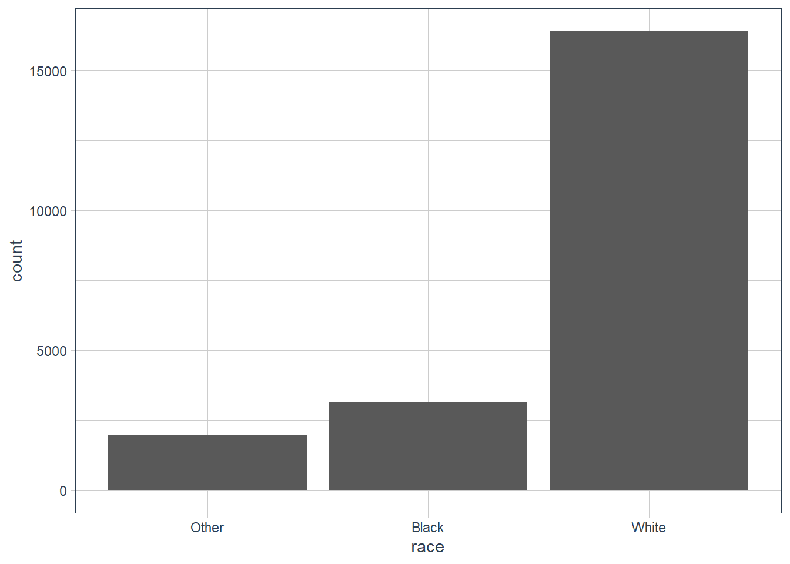
gss_cat %>%
ggplot(aes(x = relig)) +
geom_bar() +
guides(x = guide_axis(angle = 90))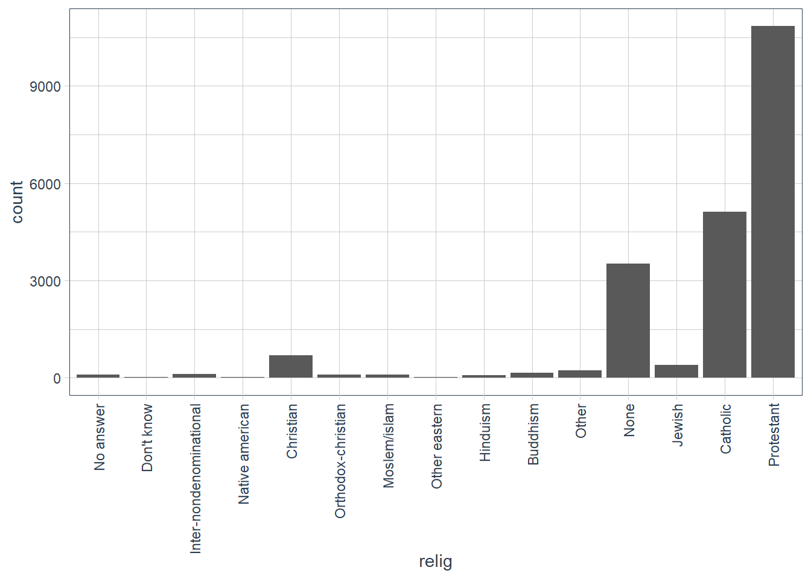
By default levels with NO Values are dropped in ggplot(). To explicitly show all levels irrespective of whether any observations in your data fall in that category use: scale_x_discrete(drop = FALSE).
gss_cat %>%
ggplot(aes(x = race)) +
geom_bar() +
# show all levels even if 0 observations
scale_x_discrete(drop = FALSE)
gss_cat %>%
count(race, sort=TRUE,
# in count use .drop
.drop = FALSE)
#> # A tibble: 4 x 2
#> race n
#>
#> 1 White 16395
#> 2 Black 3129
#> 3 Other 1959
#> 4 Not applicable 0 Exercises
Explore the distribution of
rincome(reported income). What makes the default bar chart hard to understand? How could you improve the plot?gss_cat %>% ggplot(aes(rincome)) + geom_bar() + # let's change x-axis text orientation # otherwise hard to read anything guides(x = guide_axis(angle = 45))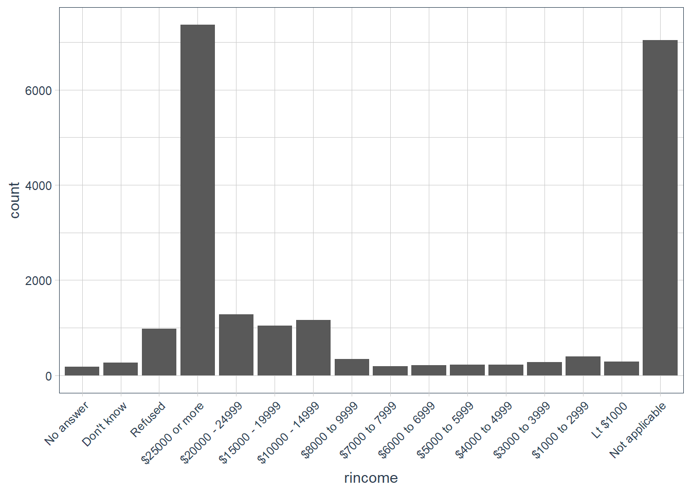
The order of the categories is a bit hard to read since we are reading right to left in increasing order of income categories. But also in the mix is some
Not applicableat one end, whereasNo answer,Don't knowandRefusedis on the other end.Let’s flip the axis.
gss_cat %>% ggplot(aes(y = rincome))+ geom_bar() + labs(y = 'Reported Income', x = 'Number of observations')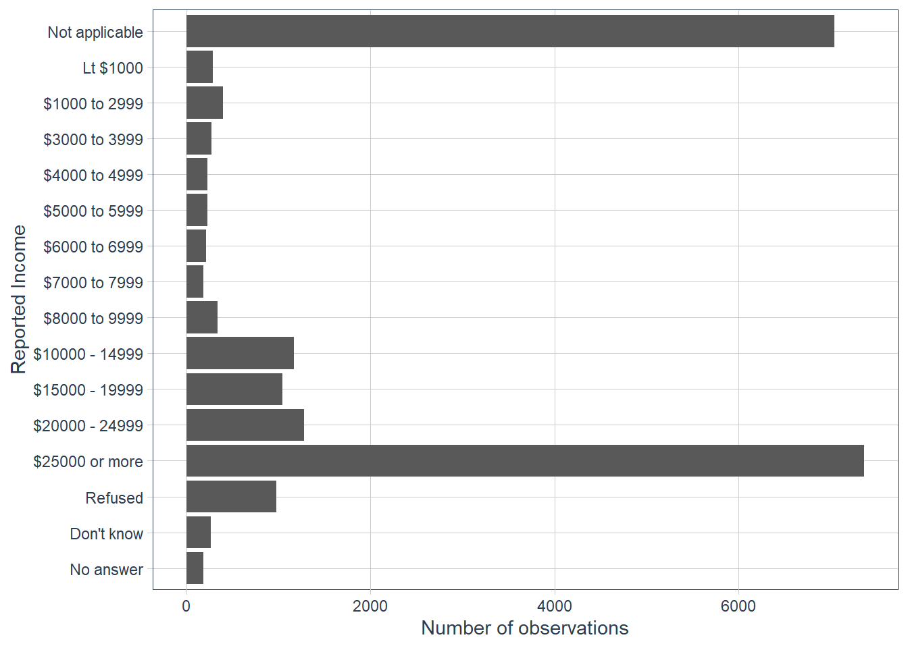
What is the most common
religin this survey? What’s the most commonpartyid?most_common_relig <- gss_cat %>% count(relig, sort = TRUE) %>% head(1) most_common_partyid <- gss_cat %>% count(partyid, sort = TRUE) %>% head(1)The most common religion is Protestant with 10846 observations out of 21483 in that category.
The most common partyid is Independent with 4119 observations out of 21483 in that category.
Which
religdoesdenom(denomination) apply to? How can you find out with a table? How can you find out with a visualisation?gss_cat %>% count(relig, denom, sort=TRUE) #> # A tibble: 47 x 3 #> relig denom n #> <fct> <fct> <int> #> 1 Catholic Not applicable 5124 #> 2 None Not applicable 3523 #> 3 Protestant Other 2534 #> 4 Protestant Southern baptist 1536 #> 5 Protestant Baptist-dk which 1457 #> 6 Protestant No denomination 1224 #> 7 Protestant United methodist 1067 #> 8 Christian No denomination 452 #> 9 Protestant Episcopal 397 #> 10 Jewish Not applicable 388 #> # ... with 37 more rows gss_cat %>% count(denom, sort = TRUE) %>% DT::datatable()gss_cat %>% filter(!is.na(denom), denom != "Not applicable", denom != 'No answer') %>% count(relig, sort = TRUE) #> # A tibble: 3 x 2 #> relig n #> <fct> <int> #> 1 Protestant 10824 #> 2 Christian 463 #> 3 Other 7 gss_cat %>% filter(!is.na(denom), denom != "Not applicable", denom != 'No answer') %>% select(relig, denom) %>% group_by(relig) %>% skimr::skim()Data summary Name Piped data Number of rows 11294 Number of columns 2 _______________________ Column type frequency: factor 1 ________________________ Group variables relig Variable type: factor
skim_variable relig n_missing complete_rate ordered n_unique top_counts denom Christian 0 1 FALSE 2 No : 452, Don: 11, No : 0, Oth: 0 denom Other 0 1 FALSE 1 No : 7, No : 0, Don: 0, Oth: 0 denom Protestant 0 1 FALSE 28 Oth: 2534, Sou: 1536, Bap: 1457, No : 1224 gss_cat %>% filter(relig == 'Christian') %>% count(denom, sort = TRUE) #> # A tibble: 4 x 2 #> denom n #> <fct> <int> #> 1 No denomination 452 #> 2 Not applicable 224 #> 3 Don't know 11 #> 4 No answer 2 gss_cat %>% ggplot(aes(y = relig, fill = denom)) + geom_bar() + scale_fill_tq() + labs(y = 'Religion', fill = 'Denomination')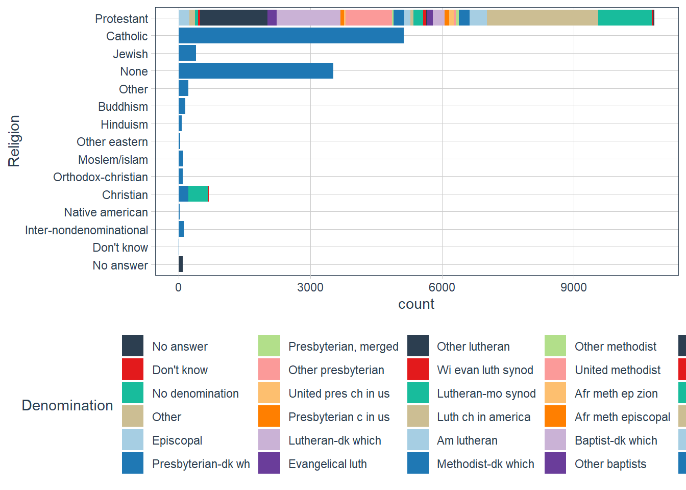
The
denomis applicable to theProtestantreligion.
Modify Factor Order
Modify Factor Order
It’s often useful to change the order of the factor levels in a visualisation.
( relig_summ <- gss_cat %>%
group_by(relig) %>%
summarise(
age = mean(age, na.rm = TRUE),
tvhours = mean(tvhours, na.rm = TRUE),
n = n()
) )
#> # A tibble: 15 x 4
#> relig age tvhours n
#> <fct> <dbl> <dbl> <int>
#> 1 No answer 49.5 2.72 93
#> 2 Don't know 35.9 4.62 15
#> 3 Inter-nondenominational 40.0 2.87 109
#> 4 Native american 38.9 3.46 23
#> 5 Christian 40.1 2.79 689
#> 6 Orthodox-christian 50.4 2.42 95
#> 7 Moslem/islam 37.6 2.44 104
#> 8 Other eastern 45.9 1.67 32
#> 9 Hinduism 37.7 1.89 71
#> 10 Buddhism 44.7 2.38 147
#> 11 Other 41.0 2.73 224
#> 12 None 41.2 2.71 3523
#> 13 Jewish 52.4 2.52 388
#> 14 Catholic 46.9 2.96 5124
#> 15 Protestant 49.9 3.15 10846
relig_summ %>%
ggplot(aes(tvhours, relig)) +
geom_point()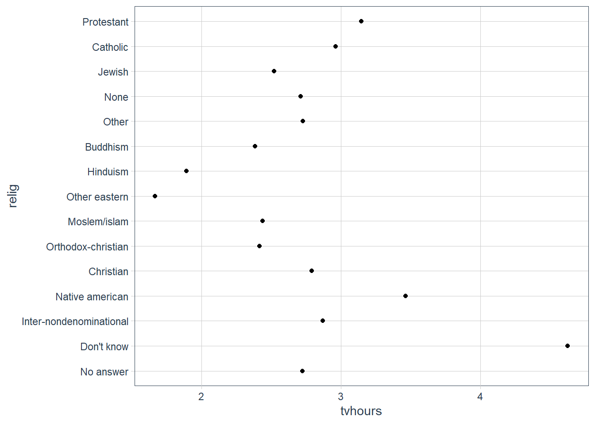
The plot above is hard to interpret since there is no pattern.
We can improve it by reordering the levels of relig using fct_reorder() .
fct_reorder() takes three arguments:
f, the factor whose levels you want to modify.x, a numeric vector that you want to use to reorder the levels.- Optionally,
fun, a function that’s used if there are multiple values ofxfor each value off. The default value ismedian.
relig_summ %>%
ggplot(aes(tvhours,
# I want to reorder the levels of religion
# based on the order of tvhours
fct_reorder(relig, tvhours))) +
geom_point()
For more complicated reordering move these out into mutate().
relig_summ %>%
mutate(relig = fct_reorder(relig, tvhours)) %>%
ggplot(aes(tvhours, relig)) +
geom_point()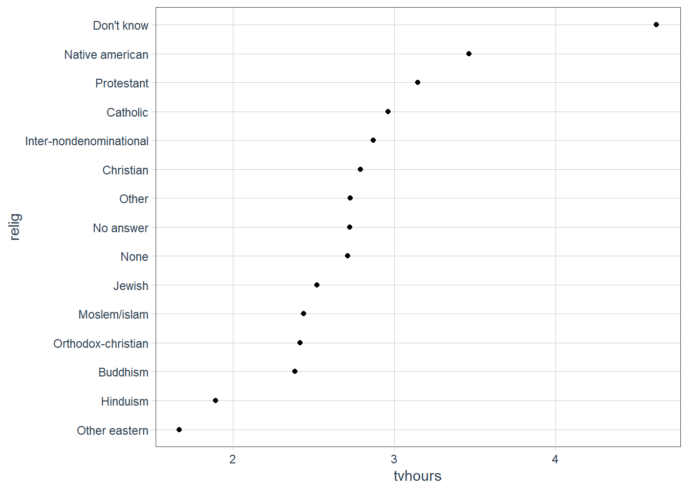
How does age vary across reported income?
(age_per_inc_level <- gss_cat %>%
group_by(rincome) %>%
summarise(age = mean(age, na.rm = TRUE),
n = n()))
#> # A tibble: 16 x 3
#> rincome age n
#> <fct> <dbl> <int>
#> 1 No answer 45.5 183
#> 2 Don't know 45.6 267
#> 3 Refused 47.6 975
#> 4 $25000 or more 44.2 7363
#> 5 $20000 - 24999 41.5 1283
#> 6 $15000 - 19999 40.0 1048
#> 7 $10000 - 14999 41.1 1168
#> 8 $8000 to 9999 41.1 340
#> 9 $7000 to 7999 38.2 188
#> 10 $6000 to 6999 40.3 215
#> 11 $5000 to 5999 37.8 227
#> 12 $4000 to 4999 38.9 226
#> 13 $3000 to 3999 37.8 276
#> 14 $1000 to 2999 34.5 395
#> 15 Lt $1000 40.5 286
#> 16 Not applicable 56.1 7043
age_per_inc_level %>%
mutate(rincome = fct_reorder(rincome, age)) %>%
ggplot(aes(age, rincome)) +
geom_point()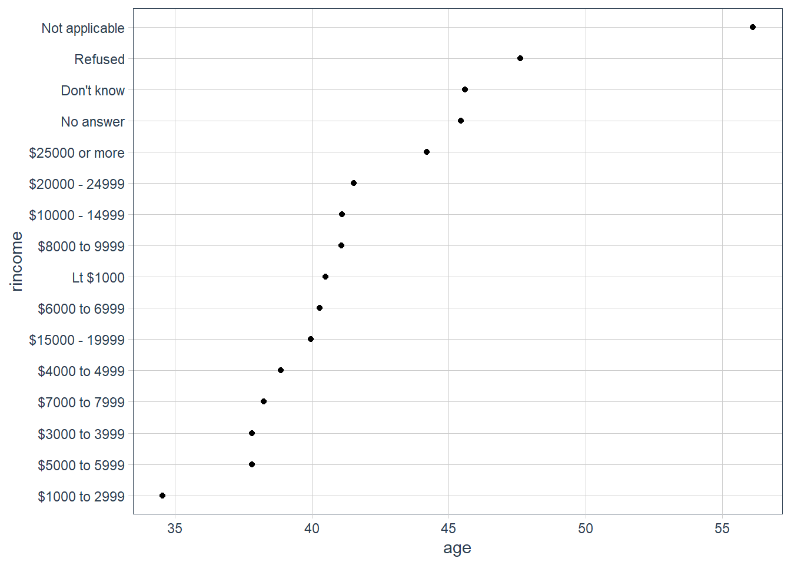
Here, reordering the levels does not make sense because rincome already has an order that we shouldn’t mess with.
Advice in book: Reserve fct_reorder() for factors whose levels are arbitrarily ordered.
Notice that it is probably better to pull out Not applicable. We use fct_relevel(). It takes a factor, f, and then any number of levels that you want to move to the front.
levels(age_per_inc_level$rincome) # levels originally
#> [1] "No answer" "Don't know" "Refused" "$25000 or more"
#> [5] "$20000 - 24999" "$15000 - 19999" "$10000 - 14999" "$8000 to 9999"
#> [9] "$7000 to 7999" "$6000 to 6999" "$5000 to 5999" "$4000 to 4999"
#> [13] "$3000 to 3999" "$1000 to 2999" "Lt $1000" "Not applicable"
(x <- fct_relevel(age_per_inc_level$rincome, "Not applicable")) # let's relevel
#> [1] No answer Don't know Refused $25000 or more $20000 - 24999
#> [6] $15000 - 19999 $10000 - 14999 $8000 to 9999 $7000 to 7999 $6000 to 6999
#> [11] $5000 to 5999 $4000 to 4999 $3000 to 3999 $1000 to 2999 Lt $1000
#> [16] Not applicable
#> 16 Levels: Not applicable No answer Don't know Refused ... Lt $1000
levels(x) # levels after
#> [1] "Not applicable" "No answer" "Don't know" "Refused"
#> [5] "$25000 or more" "$20000 - 24999" "$15000 - 19999" "$10000 - 14999"
#> [9] "$8000 to 9999" "$7000 to 7999" "$6000 to 6999" "$5000 to 5999"
#> [13] "$4000 to 4999" "$3000 to 3999" "$1000 to 2999" "Lt $1000"
ggplot(age_per_inc_level,
aes(age,
fct_relevel(rincome,
"Not applicable"))) +
geom_point()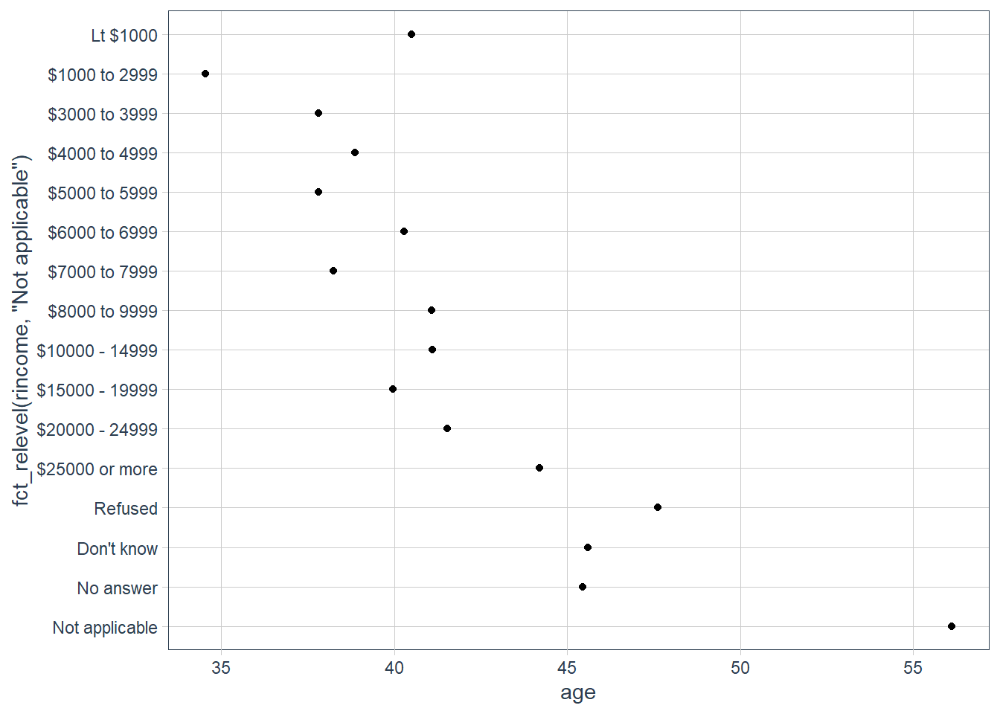
Why do you think the average age for “Not applicable” is so high?
Maybe these are retirees that don’t earn a monthly income any longer, hence they marked it as Not applicable.
Another type of reordering is useful when you are colouring the lines on a plot. fct_reorder2() reorders the factor by the y values associated with the largest x values. The legend lines up much nicer and is easier to read.
(by_age <- gss_cat %>%
filter(!is.na(age)) %>%
count(age, marital) %>%
group_by(age) %>%
mutate(prop = n / sum(n)))
#> # A tibble: 351 x 4
#> # Groups: age [72]
#> age marital n prop
#> <int> <fct> <int> <dbl>
#> 1 18 Never married 89 0.978
#> 2 18 Married 2 0.0220
#> 3 19 Never married 234 0.940
#> 4 19 Divorced 3 0.0120
#> 5 19 Widowed 1 0.00402
#> 6 19 Married 11 0.0442
#> 7 20 Never married 227 0.904
#> 8 20 Separated 1 0.00398
#> 9 20 Divorced 2 0.00797
#> 10 20 Married 21 0.0837
#> # ... with 341 more rows
ggplot(by_age, aes(age, prop, colour = marital)) +
geom_line(na.rm = TRUE)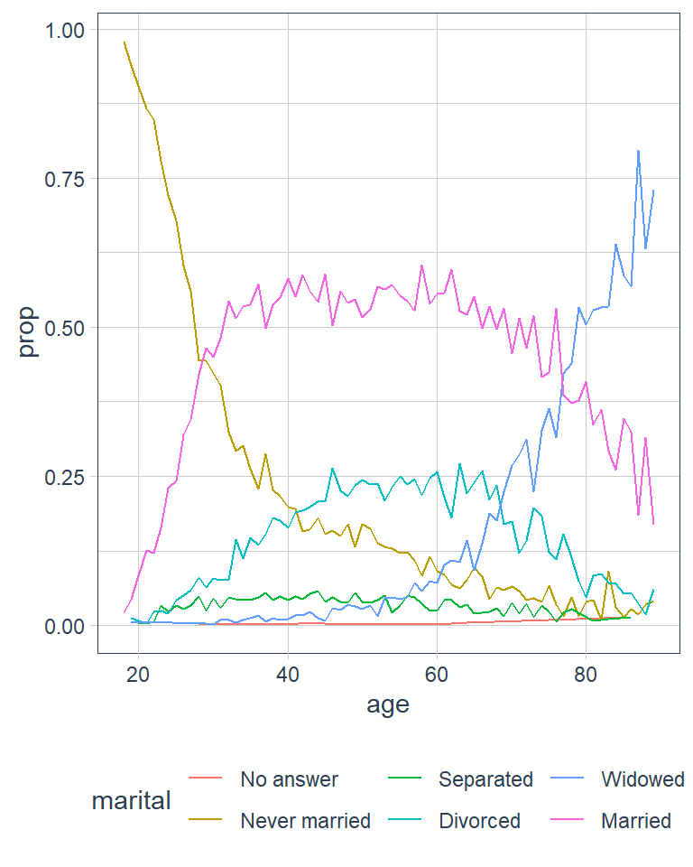
ggplot(by_age, aes(age, prop,
# reorder marital categories
# by the largest proportion
# in each age group
colour = fct_reorder2(marital,
age,
prop))) +
geom_line() +
labs(colour = 'marital')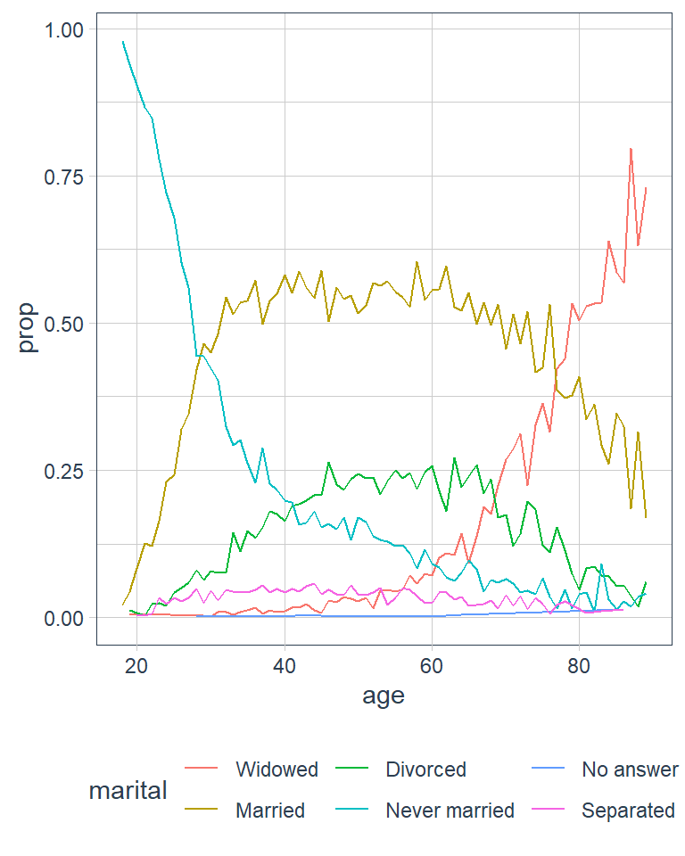
For bar plots, you can use fct_infreq() to order levels in increasing frequency, and it doesn’t need any extra variables. You may want to combine with fct_rev().
gss_cat %>%
mutate(marital = marital %>% fct_infreq()) %>%
ggplot(aes(marital)) +
geom_bar()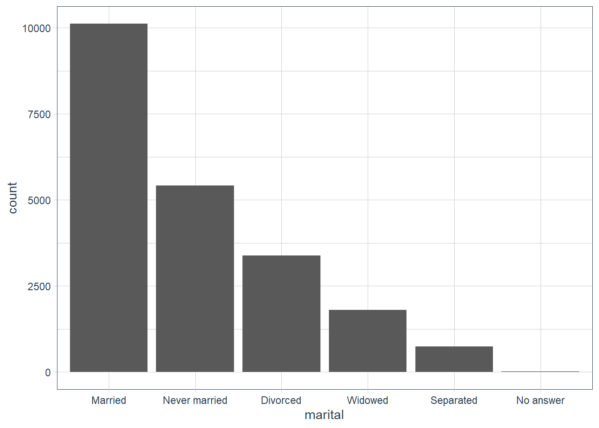
gss_cat %>%
mutate(marital = marital %>%
fct_infreq() %>% fct_rev()) %>%
ggplot(aes(marital)) +
geom_bar()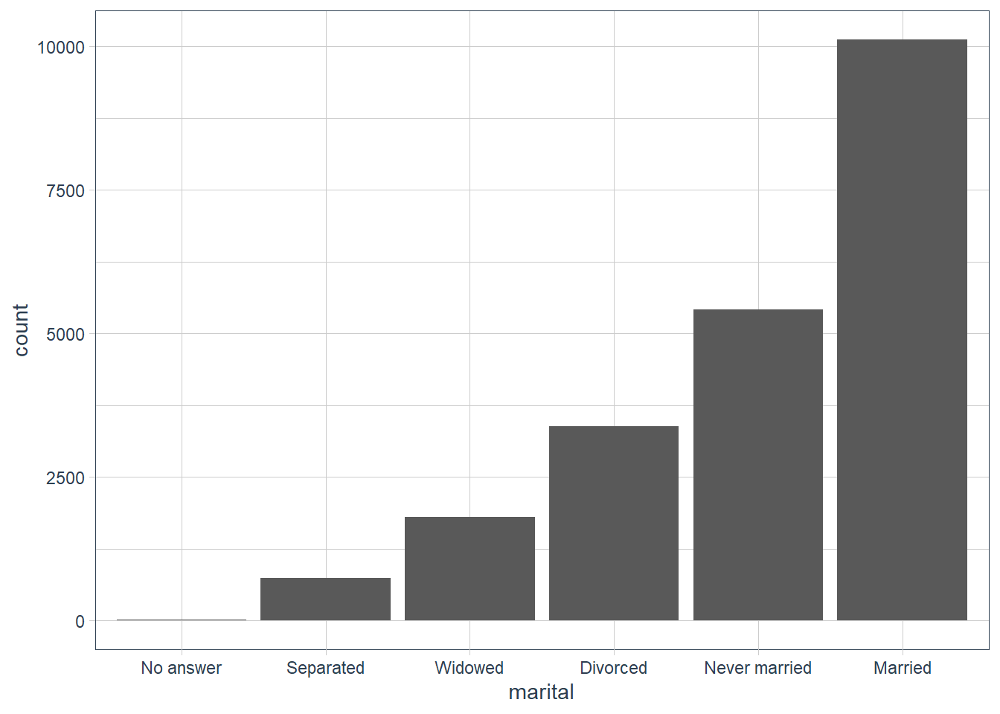
Exercises
There are some suspiciously high numbers in
tvhours. Is the mean a good summary?ggplot(gss_cat, aes(tvhours)) + geom_histogram()
It’s probably better to use a median as there are outliers present.
For each factor in
gss_catidentify whether the order of the levels is arbitrary or principled.levels(gss_cat$marital) #> [1] "No answer" "Never married" "Separated" "Divorced" #> [5] "Widowed" "Married" levels(gss_cat$race) #> [1] "Other" "Black" "White" "Not applicable" levels(gss_cat$rincome) #> [1] "No answer" "Don't know" "Refused" "$25000 or more" #> [5] "$20000 - 24999" "$15000 - 19999" "$10000 - 14999" "$8000 to 9999" #> [9] "$7000 to 7999" "$6000 to 6999" "$5000 to 5999" "$4000 to 4999" #> [13] "$3000 to 3999" "$1000 to 2999" "Lt $1000" "Not applicable" levels(gss_cat$partyid) #> [1] "No answer" "Don't know" "Other party" #> [4] "Strong republican" "Not str republican" "Ind,near rep" #> [7] "Independent" "Ind,near dem" "Not str democrat" #> [10] "Strong democrat" levels(gss_cat$relig) #> [1] "No answer" "Don't know" #> [3] "Inter-nondenominational" "Native american" #> [5] "Christian" "Orthodox-christian" #> [7] "Moslem/islam" "Other eastern" #> [9] "Hinduism" "Buddhism" #> [11] "Other" "None" #> [13] "Jewish" "Catholic" #> [15] "Protestant" "Not applicable" levels(gss_cat$denom) #> [1] "No answer" "Don't know" "No denomination" #> [4] "Other" "Episcopal" "Presbyterian-dk wh" #> [7] "Presbyterian, merged" "Other presbyterian" "United pres ch in us" #> [10] "Presbyterian c in us" "Lutheran-dk which" "Evangelical luth" #> [13] "Other lutheran" "Wi evan luth synod" "Lutheran-mo synod" #> [16] "Luth ch in america" "Am lutheran" "Methodist-dk which" #> [19] "Other methodist" "United methodist" "Afr meth ep zion" #> [22] "Afr meth episcopal" "Baptist-dk which" "Other baptists" #> [25] "Southern baptist" "Nat bapt conv usa" "Nat bapt conv of am" #> [28] "Am bapt ch in usa" "Am baptist asso" "Not applicable"I think all are arbitrary apart from
rincome. We also saw earlier thatraceseems to be ordered by count of observations in each category but on its own they are arbitrary - i.e. there is no order to race. There are some that are a mix, likepartyid(theNo answer,Don't knowandNo denominationare up front, but thenNot applicableis at the end) but again these are arbitrary. Forpartyidas well it is arbitrary apart from the fact thatdemocratsare near each other,republicansare near each other etc.Why did moving “Not applicable” to the front of the levels move it to the bottom of the plot?
The levels are plotted from the bottom upwards, so the first level goes at the bottom, followed by the next level etc.
Modify Factor Levels
Modify Factor Levels
You may also change the values of factors.
- good for clarifying labels for publication
- collapse levels for high-level displays
fct_recode() allows you to recode, or change, the value of each level.
gss_cat %>%
count(partyid)
#> # A tibble: 10 x 2
#> partyid n
#> <fct> <int>
#> 1 No answer 154
#> 2 Don't know 1
#> 3 Other party 393
#> 4 Strong republican 2314
#> 5 Not str republican 3032
#> 6 Ind,near rep 1791
#> 7 Independent 4119
#> 8 Ind,near dem 2499
#> 9 Not str democrat 3690
#> 10 Strong democrat 3490To change these:
gss_cat %>%
mutate(partyid = fct_recode(partyid, # recode what?
# new level name = old level name
"Republican, strong" = "Strong republican",
"Republican, weak" = "Not str republican",
"Independent, near rep" = "Ind,near rep",
"Independent, near dem" = "Ind,near dem",
"Democrat, weak" = "Not str democrat",
"Democrat, strong" = "Strong democrat")) %>%
count(partyid)
#> # A tibble: 10 x 2
#> partyid n
#>
#> 1 No answer 154
#> 2 Don't know 1
#> 3 Other party 393
#> 4 Republican, strong 2314
#> 5 Republican, weak 3032
#> 6 Independent, near rep 1791
#> 7 Independent 4119
#> 8 Independent, near dem 2499
#> 9 Democrat, weak 3690
#> 10 Democrat, strong 3490 fct_recode() will leave levels that aren’t explicitly mentioned as is, and will warn you if you accidentally refer to a level that doesn’t exist.
You can also combine groups, by assigning multiple old levels to the same new level, but use with caution. Combining categories that are truly independent, can lead to misleading results.
gss_cat %>%
mutate(partyid = fct_recode(partyid, # recode what?
# new level name = old level name
"Republican, strong" = "Strong republican",
"Republican, weak" = "Not str republican",
"Independent, near rep" = "Ind,near rep",
"Independent, near dem" = "Ind,near dem",
"Democrat, weak" = "Not str democrat",
"Democrat, strong" = "Strong democrat",
"Other" = "No answer",
"Other" = "Don't know",
"Other" = "Other party")) %>%
count(partyid)
#> # A tibble: 8 x 2
#> partyid n
#> <fct> <int>
#> 1 Other 548
#> 2 Republican, strong 2314
#> 3 Republican, weak 3032
#> 4 Independent, near rep 1791
#> 5 Independent 4119
#> 6 Independent, near dem 2499
#> 7 Democrat, weak 3690
#> 8 Democrat, strong 3490fct_collapse() is a useful variant of fct_recode() to collapse levels. For each new variable, you provide a vector of old levels.
gss_cat %>%
mutate(partyid = fct_collapse(partyid,
# new name = vector of old names
"other" = c("No answer", "Don't know", "Other party"),
"rep" = c("Strong republican", "Not str republican"),
"ind" = c("Ind,near rep", "Independent", "Ind,near dem"),
"dem" = c("Not str democrat", "Strong democrat"))) %>%
count(partyid)
#> # A tibble: 4 x 2
#> partyid n
#>
#> 1 other 548
#> 2 rep 5346
#> 3 ind 8409
#> 4 dem 7180 Sometimes you want to lump together all the small groups to make a plot or table simpler - enter fct_lump().
gss_cat %>%
mutate(relig = fct_lump(relig)) %>%
count(relig)
#> # A tibble: 2 x 2
#> relig n
#>
#> 1 Protestant 10846
#> 2 Other 10637 The default method is to progressively lump together the smallest groups, ensuring that the aggregate is still the smallest group. But here it’s not very helpful since we have probably over collapsed.
We can use the n parameter to specify how many groups (including Other) we want to keep
gss_cat %>%
mutate(relig = fct_lump(relig, n = 10)) %>%
count(relig, sort = TRUE) %>%
print(n = Inf)
#> # A tibble: 10 x 2
#> relig n
#>
#> 1 Protestant 10846
#> 2 Catholic 5124
#> 3 None 3523
#> 4 Christian 689
#> 5 Other 458
#> 6 Jewish 388
#> 7 Buddhism 147
#> 8 Inter-nondenominational 109
#> 9 Moslem/islam 104
#> 10 Orthodox-christian 95 Exercises
How have the proportions of people identifying as Democrat, Republican, and Independent changed over time?
gss_cat %>% count(year, sort = TRUE) #> # A tibble: 8 x 2 #> year n #> <int> <int> #> 1 2006 4510 #> 2 2000 2817 #> 3 2004 2812 #> 4 2002 2765 #> 5 2014 2538 #> 6 2010 2044 #> 7 2008 2023 #> 8 2012 1974 gss_cat %>% mutate(partyid = fct_collapse(partyid, "Democrat" = c("Not str democrat", "Strong democrat"), "Republican" = c("Strong republican", "Not str republican"), "Independent" = c("Ind,near rep", "Independent", "Ind,near dem"), "Other" = c("No answer", "Don't know", "Other party"))) %>% # filter(partyid != "Other") %>% add_count(year, partyid) %>% group_by(year) %>% mutate(prop = n / n()) %>% select(year, partyid, n, prop) %>% distinct() %>% ggplot(aes(year, prop, fill = partyid)) + geom_col() + scale_fill_tq()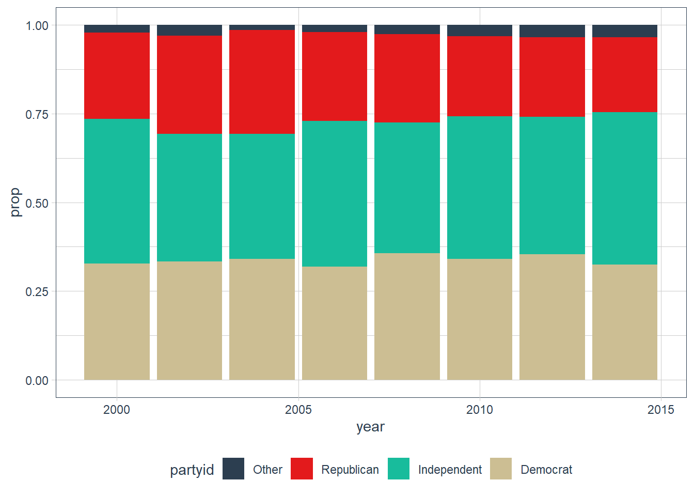
It seems that both democrats and republicans have lost some members to the independent parties.
How could you collapse
rincomeinto a small set of categories?gss_cat %>% count(rincome, sort = TRUE) #> # A tibble: 16 x 2 #> rincome n #> <fct> <int> #> 1 $25000 or more 7363 #> 2 Not applicable 7043 #> 3 $20000 - 24999 1283 #> 4 $10000 - 14999 1168 #> 5 $15000 - 19999 1048 #> 6 Refused 975 #> 7 $1000 to 2999 395 #> 8 $8000 to 9999 340 #> 9 Lt $1000 286 #> 10 $3000 to 3999 276 #> 11 Don't know 267 #> 12 $5000 to 5999 227 #> 13 $4000 to 4999 226 #> 14 $6000 to 6999 215 #> 15 $7000 to 7999 188 #> 16 No answer 183You could make the income bands larger in some categories.
gss_cat %>% mutate(rincome = fct_collapse(rincome, "Unknown" = c("Refused", "Don't know", "No answer"), "$1000 to 3999" = c("$1000 to 2999", "$3000 to 3999"), "$4000 to 6999" = c("$4000 to 4999", "$5000 to 5999", "$6000 to 6999"), "$7000 to 9999" = c("$7000 to 7999", "$8000 to 9999") )) %>% mutate(rincome = fct_relevel(rincome, "Unknown", "Not applicable")) %>% count(rincome) #> # A tibble: 10 x 2 #> rincome n #> <fct> <int> #> 1 Unknown 1425 #> 2 Not applicable 7043 #> 3 $25000 or more 7363 #> 4 $20000 - 24999 1283 #> 5 $15000 - 19999 1048 #> 6 $10000 - 14999 1168 #> 7 $7000 to 9999 528 #> 8 $4000 to 6999 668 #> 9 $1000 to 3999 671 #> 10 Lt $1000 286
sessionInfo()
#> R version 3.6.3 (2020-02-29)
#> Platform: x86_64-w64-mingw32/x64 (64-bit)
#> Running under: Windows 10 x64 (build 18363)
#>
#> Matrix products: default
#>
#> locale:
#> [1] LC_COLLATE=English_South Africa.1252 LC_CTYPE=English_South Africa.1252
#> [3] LC_MONETARY=English_South Africa.1252 LC_NUMERIC=C
#> [5] LC_TIME=English_South Africa.1252
#>
#> attached base packages:
#> [1] stats graphics grDevices utils datasets methods base
#>
#> other attached packages:
#> [1] tidyquant_1.0.0 quantmod_0.4.17
#> [3] TTR_0.23-6 PerformanceAnalytics_2.0.4
#> [5] xts_0.12-0 zoo_1.8-7
#> [7] lubridate_1.7.9 magrittr_1.5
#> [9] flair_0.0.2 forcats_0.5.0
#> [11] stringr_1.4.0 dplyr_1.0.2
#> [13] purrr_0.3.4 readr_1.4.0
#> [15] tidyr_1.1.2 tibble_3.0.3
#> [17] ggplot2_3.3.2 tidyverse_1.3.0
#> [19] workflowr_1.6.2
#>
#> loaded via a namespace (and not attached):
#> [1] httr_1.4.2 jsonlite_1.7.1 modelr_0.1.8 assertthat_0.2.1
#> [5] highr_0.8 cellranger_1.1.0 yaml_2.2.1 pillar_1.4.6
#> [9] backports_1.1.6 lattice_0.20-38 glue_1.4.2 quadprog_1.5-8
#> [13] digest_0.6.27 promises_1.1.0 rvest_0.3.6 colorspace_1.4-1
#> [17] htmltools_0.5.0 httpuv_1.5.2 pkgconfig_2.0.3 broom_0.7.2
#> [21] haven_2.3.1 scales_1.1.0 whisker_0.4 later_1.0.0
#> [25] git2r_0.26.1 generics_0.0.2 farver_2.0.3 ellipsis_0.3.1
#> [29] DT_0.16 repr_1.1.0 withr_2.2.0 skimr_2.1.1
#> [33] cli_2.1.0 crayon_1.3.4 readxl_1.3.1 evaluate_0.14
#> [37] ps_1.3.2 fs_1.5.0 fansi_0.4.1 xml2_1.3.2
#> [41] tools_3.6.3 hms_0.5.3 lifecycle_0.2.0 munsell_0.5.0
#> [45] reprex_0.3.0 compiler_3.6.3 rlang_0.4.8 grid_3.6.3
#> [49] rstudioapi_0.11 htmlwidgets_1.5.1 crosstalk_1.1.0.1 base64enc_0.1-3
#> [53] labeling_0.3 rmarkdown_2.4 gtable_0.3.0 DBI_1.1.0
#> [57] curl_4.3 R6_2.4.1 knitr_1.28 utf8_1.1.4
#> [61] rprojroot_1.3-2 Quandl_2.10.0 stringi_1.5.3 Rcpp_1.0.4.6
#> [65] vctrs_0.3.2 dbplyr_2.0.0 tidyselect_1.1.0 xfun_0.13